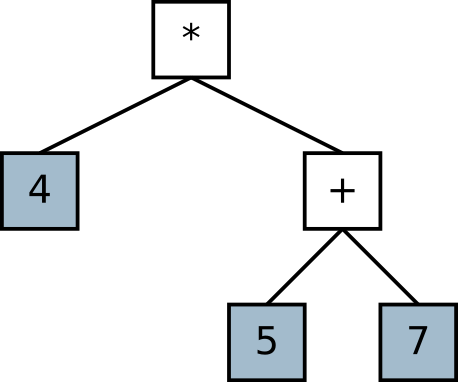
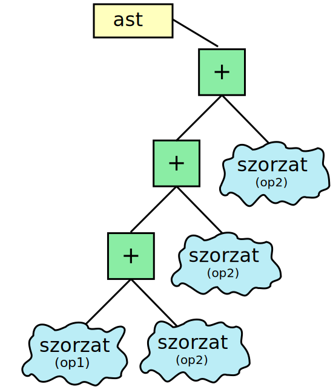

AST: szintaxisfák építése
Nagy Gergely · 2015.02.18 · Frissítve: 2015.02.15
Az absztrakt szintaxisfák egy kifejezés, vagy akár egy teljes forráskód szintaktikai felépítését tárolják. Ez az írás megmutatja, hogyan lehet felépíteni egy ilyet.
Az nyelvi elemzőkről szóló előadáson áttekintettük, hogy hogyan lehet nyelvi elemzőket készíteni EBNF-ben adott nyelvtanok kiértékelésére. Ott egy olyan programot készítettünk el, amely a négy alapműveletből és zárójelekből felépített tetszőleges bonyolultságú matematikai kifejezéseket elemzett és rögtön ki is számolta az eredményt.
Egy egyszerű probléma esetén, mint amilyen ez is, a helyben történő kiértékelő teljesen megfelelő megoldás, hiszen mind az elemzéshez szükséges, mind a műveleteket elvégző kód egyszerű, így a kettő „összekeverése” nem rontja az áttekinthetőséget.
Nagy nyelvtanok esetén (pl. egy programnyelv elemzésekor) azonban ez a megoldás már járhatatlan: szét kell választani az elemzést és a kiértékelést. Ez a gyakorlatban azt jelenti, hogy az elemző a feldolgozott szövegnek egy új reprezentációját állítja elő, amit már sokkal egyszerűbb értelmezni. Így a kiértékelő algoritmusnak már nem kell törődnie a szintaxisből adódó nehézségekkel, csak az előírt műveletsor végrehajtására kell koncentrálnia. Ráadásul a két feladat szétválasztása azt is biztosítja, hogy az értelmező egység csak hibátlan adatokat kap, tehát hibakezeléssel már nem kell foglalkoznia – ez az elemző feladata.
1Az absztrakt szintaxisfa
Felmerül a kérdés, hogy milyen adatszerkezet lehet alkalmas arra, hogy egy értelmezett szöveget (pl. egy matematikai kifejezést) eltároljunk benne. A válasz természetesen nem egyértelmű, de nagyon gyakran a fákat szokták alkalmazni. A nyelvi elemzés során előálló, a szöveget reprezentáló fákat absztrakt szintaxisfának (abstract syntax tree, AST) hívják.
Ahogy azt már kifejezésekről szóló írásban is elmondtuk, a fa előnye az, hogy az adatokon túl azok hierarchiáját is képes eltárolni. Ott azért jött ez a tulajdonság nagyon jól, mert így képesek voltunk a műveletek precedenciáját is eltárolni, ezáltal biztosítva azt, hogy a kiértékelés mindig helyes sorrendben történjék.
Azoban ennél sokkal összetettebb esetekben is kiválóan alkalmazható ez az adatszerkezet. A Wikipédia erről szóló cikkében egy rövid programkódrészletnek megfelelő fát mutat be.
Itt most az utolsó előadás programját alakítjuk át úgy, hogy az ne számolja ki helyben a kifejezés értékét, hanem építse fel belőle a szintaxisfát.

Figyeljük meg az ábrán látható fát, amely a 4*(5+7) kifejezésnek
felel meg. A kifejezésünk azt írja elő, hogy az 5 és 7 összegét előbb kell
képezni kell és csak ezután számolhatjuk ki a 4-gyel való szorzatukat. Ezt a fa
úgy jelöli, hogy a szorzás jobb oldali operandusa nem egy szám, hanem az összeg.
A fa kiértékelése úgy történik, hogy megkérdezzük a gyökerétől, hogy mennyi a kifejezés értéke. A válasza attól függ, hogy milyen jellegű csomópont. Ha ő egy szám, akkor megmondja az értékét és már kész is vagyunk. Ha viszont egy művelet, akkor megkérdezi az operandusaitól (a gyermekeitől), hogy mennyi az ő értékük, majd a kapott számokon elvégzi az előírt művelet és így vagyunk készen.
Ez tehát egy rekurzív algoritmus, hiszen, amikor egy elem megkérdezi az gyermekeitől az ő értéküket, akkor ugyanazt a kérdést teszi fel, mint amit mi tettünk fel a szintaxisfánk gyökerének, vagyis ugyanazt a függvényt hívja meg.
A példában tehát először a szorzástól kérdezzük meg az értékét, aki pedig tovább kérdezi a gyermekeit. A balgyermek rögtön tud válaszolni, az ő értéke 4. A jobbgyermek egy összeadás, tehát ő megkérdezi a gyermekeit. Azok megmondják az értéküket, így az összeg előáll, amit megkap a szorzás, és ezzel kiszámoltuk a kifejezést.
2A megoldás alapötlete
Az előadáson szerepelt a matematikai kifejezéseket leíró nyelvtan, amit most ismétlésképpen idemásoltunk:
kifejezés ::= összeg
összeg ::= szorzat (('+' | '-') szorzat)*
szorzat ::= tényező (('*' | '/') tényező)*
tényező ::= szám | zárójeles
zárójeles ::= '(' kifejezés ')'
A nehézséget az fogja jelenteni most a számunkra, hogy a nyelvtanunk rekurzív, tehát az elemzőnk is az lesz. Vagyis a fát egy rekurzív algoritmussal kell majd felépítenünk! Ez elsőre nagyon ijesztőnek tűnhet.
Rekurzív problémák megoldásához azt szokták javasolni, hogy legyünk optimisták és tegyük fel, hogy a függvényünk helyesen működik. A feladatunk ezután kettős. Egyrészt ki kell találnunk, hogy hogyan tudjuk lebontani a megoldást lépésekre, másrészt meg kell megoldást kell adnunk egy lépésre úgy, hogy feltételezhetjük, hogy a probléma maradékát a függvényünk már meg fogja oldani.
Ez így nagyon általánosan hangzik, ezért nézzünk meg egy konkrét példát! Vegyük a fenti nyelvtanunkhoz írt elemző egy részletének egyszerűsített pszeudó-kódját:
logikai összeg(szöveg_mutató, érték_mutató) {
munka_mutató = szöveg_mutató
if (szorzat(munka_mutató, &érték1)) {
if (karakter(munka_mutató, "+-", &művelet)) {
if (szorzat(munka_mutató, &érték2) {
érték_mutató = (művelet == '+') ? (érték1 + érték2) : (érték1 - érték2)
szöveg_mutató = munka_mutató
return IGAZ
}
}
}
return HAMIS
}
A fenti kód egyelemű összegeket (vagy különbségeket) tud feldolgozni. Ha a
szövegben talál egy szorzatot, akkor annak értékét elmenti az
érték1 változóba. Ezután ha talál egy + vagy
- karaktert, akkor az azt jelenti, hogy lesz még egy tag, tehát
újból keres egy szorzatot, aminek az értékét a érték2 változóba
helyezi. Ha mindez sikeresen megtörtént, akkor elvégzi az előírt műveleten, az
eredményt beleírja az érték_mutatóba, a szövegmutatót az elemzett szöveg végére
állítja és IGAZ értékkel tér vissza. Minden hibás esetben HAMIS értéket ad a
függvény.
A teljes elemzőnk ehhez hasonló függvényekből áll. A kérdés az, hogy hogyan tudnánk ezekbe az elemi kis algoritmusokba becsempészni a fa felépítésének egy-egy mozzanatát úgy, hogy az előálló kód végül egy teljes fát eredményezzen.
Az egészen biztos, hogy egy-egy függvény csak egy farészletet tud elkészíteni.
Azt is tudjuk, hogy a fa kezdetben üres lesz, tehát az első függvényhívás során
egy NULL pointert kapunk.
Az lehet a kiinduló ötletünk, hogy ne egy fa gyökerére mutató pintert vegyünk
át, hanem egy olyan pointernek a címét, amibe mi írjuk bele az általunk
elkészített fa gyökerének a címét. Tehát ha mondjuk a kifejezésünk egy darab
számból áll, akkor megkapjuk egy olyan pointernek a címét, aminek az értéke
NULL, elkészítünk egy fa-elemet, amit a kettes értéket tárolja és
ennek a címét beleírjuk az átvett pointerbe.
Mi történik összetettebb esetben, például a fenti összeg függvény esetén?
A függvényünk tehát át fogja venni egy pointer címét, amibe egy „összeg” típusú elemnek a címét kell elhelyeznie.
A kérdés az, hogy mi lesz ennek az „összeg” elemnek a két gyermeke? Természetesen két „szorzat”, hiszen ez a szabály
szorzatok összegére illeszkedik!
A teendő tehát az, hogy veszünk két lokális mutatót, amelyek a két szorzat
által előállított fa gyökerei lesznek. Ezeket a szorzat feltölti
tartalommal. Nekünk mindössze annyi a dolgunk, hogy az „összeg” elem
gyermekeire mutató pointereket beállítjuk a két visszakapott fa gyökerére.
logikai összeg(szöveg_mutató, gyökér_mutató) {
munka_mutató = szöveg_mutató
if (szorzat(munka_mutató, &bal_gyermek)) {
if (karakter(munka_mutató, "+-", &művelet)) {
if (szorzat(munka_mutató, &jobb_gyermek) {
új_elem = új_összeg
új_elem->bal=bal_gyermek
új_elem->jobb=jobb_gyermek
gyökér_mutató = új_elem
szöveg_mutató = munka_mutató
return IGAZ
}
}
}
return HAMIS
}
Az történt tehát, hogy feltettük, hogy a függvényeink előállítják a megfelelő fákat, és mi csak azt elemi műveletet adtuk meg, ami két részfából egy összeget képez!
Természetesen a szám szabályunk leveleket fog létrehozni, hiszen
egy számnak már nincsenek operandusai. A zárójeles szabály pedig
elkéri az összeg szabálytól az általa előállított fa gyökerét és
ezt adja meg a zárójel előtt művelet jobb oldali operandusaként. (Valójában
persze egyszerűen visszaadja a kapott fa gyökerét, és az ő hívója fogja a
pointerek beállítását végezni.)
3A faépítő program
A szintaxisfát leíró adattípus egészen egyszerű lesz: a fa egy elem vagy szám,
vagy művelet. Ez a szimbolum_tipus nevű felsorolt típussal adjuk
meg. Egy elemben vagy egy műveleti jelet, vagy egy számértéket tárolunk el
– ilyenkor jönnek jól a unionok.
typedef enum {MUVELET, SZAM} szimbolum_tipus;
typedef struct szimbolum {
szimbolum_tipus tipus;
union {
double szam;
char muveleti_jel;
} adat;
struct szimbolum *op1, *op2;
} szimbolum;
Nézzük meg most valójában az osszeg függvény kódját. A dolog
annyival bonyolultabb itt, hogy tetszőleges számú tagból álló összeget fel kell
tudnunk dolgozni.
Az a feladatunk, hogy előállítsunk egy olyan farészletet, aminek a kiértékelése a helyes eredményre vezet. A megoldás az lehet, ha az első elkészült összegünk (aminek tehát két szorzat operandusa van) lesz a következő összegnek a bal oldali operandusa, a jobb oldali pedig az újonnan beolvasott szorzat lesz. Így tetszőleges számú tagot fel tudunk fűzni egymás után és amikor a legfelsőt megkérjük, hogy adja meg az értékét, akkor sorban meghívja majd a bal oldali irányban lévő összegeket és előáll a helyes érték.

int osszeg(char **szoveg, szimbolum **ast) {
char *munka = *szoveg;
char kar;
szimbolum *op1, *op2, *uj = NULL;
szokoz(&munka);
if (szorzat(&munka, &op1)) {
while (karakter(&munka, "+-", &kar)) {
if (szorzat(&munka, &op2)) {
uj = uj_muvelet(kar);
uj->op1 = op1;
uj->op2 = op2;
op1 = uj;
}
else return 0;
}
if (uj == NULL) *ast = op1;
else *ast = uj;
*szoveg = munka;
return 1;
}
else {
return 0;
}
}
Figyeljük meg, hogy az osszeg függvény az op1 és
op2 pointerekben menti el a szorzat hívásokból kapott
részfák gyökerét, az uj pointer pedig arra szolgál, hogy az
újonnan létrehozot „összeg” típusú elem címét tárolja.
Az első két tag feldolgozásakor létrehozunk egy új elemet és a két gyermekeként
beállítjuk az op1 és op2 pointereket. Ezután azt
mondjuk, hogy az op1 innentől mutasson az új elemre. Ez nem okoz
gondot, hiszen az op1 értékét már eltároltuk
uj->op1-ben, másrészt viszont így értjük el azt, hogy ha
további tagok következnek, tehát ha újból belépünk a while
ciklusba, akkor az ebben az iterációban létrehozott új elemnek az
op1 mutatója az előző uj elemre fog mutatni –
pontosan úgy, ahogyan az ábrán látható.
Még érdemes megnézni tenyezo szabályunk kódbeli megvalósulását:
int tenyezo(char **szoveg, szimbolum **ast) {
char *munka = *szoveg;
char kar;
double ertek;
szokoz(&munka);
if (zarojeles(&munka, ast)) {
*szoveg = munka;
return 1;
}
else if (szam(&munka, &ertek)) {
*ast = uj_szam(ertek);
*szoveg = munka;
return 1;
}
else {
return 0;
}
}
A kód nagyon egyszerű: egy tényező az vagy egy szám, vagy egy zárójeles kifejezés.
Ha zárójeles kifejezés, akkor a zarojeles hívásból kapott fa lesz maga a tényező,
tehát egyszerűen továbbadhatjuk a kapott pointert és hagyhatjuk, hogy az a függvény állítsa be őt.
Ha pedig számot találtunk, akkor létrehozunk egy új szám elemet és ezt adjuk
vissza. Az uj_szam függvény a gyermekek pointereit
NULL-ra állítja, hiszen szám egy kifejezésfában csak levél lehet.
A zárójeles kifejezés szintén továbbadja a megkapott pointert, mégpedig az osszeg
függvénynek, hiszen a nyelvtanunk szerint egy zárójeles kifejezés az egy összeg zárójelek között:
int zarojeles(char **szoveg, szimbolum **ast) {
char *munka = *szoveg;
char kar;
szokoz(&munka);
if (karakter(&munka, "(", &kar) && osszeg(&munka, ast) && karakter(&munka, ")", &kar)) {
*szoveg = munka;
return 1;
}
else {
return 0;
}
}
4A fa kiértékelése
Végezetül álljon itt a fa kiértékelését végző rekurzív algoritmus, bár igazából ez lényegében nem különbözik a kifejezésekről szóló írásunkban adott megoldástól:
double ast_kiertekel(szimbolum *ast) {
if (ast == NULL) return 0.0;
else {
double op1 = ast_kiertekel(ast->op1), op2 = ast_kiertekel(ast->op2);
switch (ast->tipus) {
case SZAM:
return ast->adat.szam;
case MUVELET:
switch (ast->adat.muveleti_jel) {
case '+':
return op1 + op2;
case '-':
return op1 - op2;
case '*':
return op1 * op2;
case '/':
return op1 / op2;
}
}
return 0.0; //default ágak hiánya miatt
}
}
Látható, hogy az aktuális elem típusa szerint ágazunk el egy switch szerkezettel.
Ha az aktuális elemünk egy szám, akkor egyszerűen visszatérünk az értékével, ha pedig egy művelet, akkor elvégezzük
a megfelelő műveletet a két operandusunkon.
Az operandusok kiszámolásánál történik a rekurzív hívás, a báziskritérium pedig természetesen az, hogy ha a kapott
fa gyökere NULL, akkor az érték legyen nulla. Igazából ez csak a rekurzió leállításához szükség, hiszen
ez a nulla érték sehol sem fog megjelenni, ugyanis csak számok lehetnek levelek a fában, náluk viszont nem használjuk fel
a gyermekek értékét.
A teljes kód letölthető innen.